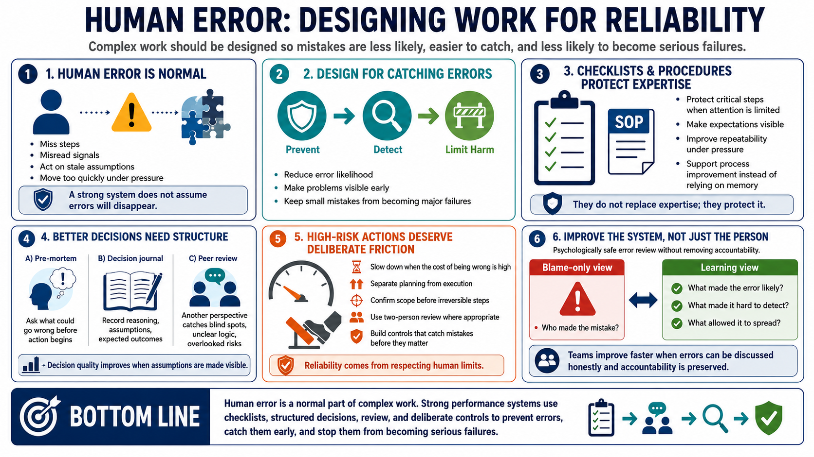

Decision Quality and Error Management
Connecting to LMS... Progress: in progress

Narration
Human error is a normal feature of complex work. Even skilled, careful people miss steps, misread signals, choose based on stale assumptions, or act too quickly under pressure. A strong performance system does not pretend errors will disappear. It designs work so mistakes are less likely, easier to catch, and less likely to become serious failures.
Checklists and standard operating procedures support repeatable execution. They do not replace expertise; they protect it. A good checklist helps ensure that known critical steps are not missed when attention is limited or pressure is high. Procedures also make expectations visible so teams can improve the process instead of relying on memory.
Pre-mortems, decision journals, and peer review improve decision quality. A pre-mortem asks what could go wrong before action begins. A decision journal captures the reasoning, assumptions, and expected outcomes at the time of the decision. Peer review adds another perspective that may catch blind spots, unclear logic, or overlooked risks.
High-risk actions deserve deliberate friction. Slow down when the cost of being wrong is high. Separate planning from execution. Confirm scope before irreversible steps. Use two-person review where appropriate. Design systems that catch mistakes before they matter. Reliability comes from respecting human limits and building controls around them.
Error management works best when the team can discuss mistakes without turning every review into blame. The useful question is not only who made the error, but what made the error likely, hard to detect, or easy to amplify. That shift helps teams improve the system while still preserving accountability for careful work.